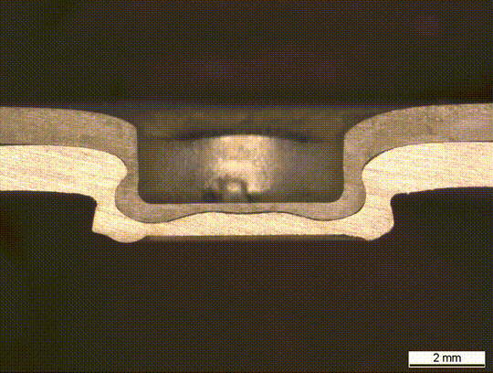
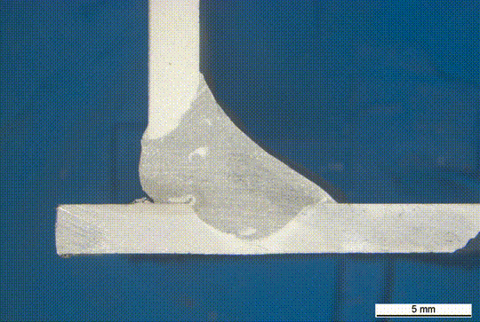
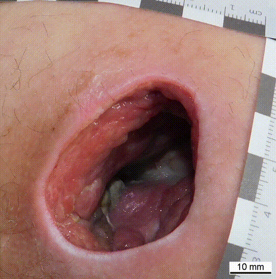

My name is Kirill Meisser, I am 27 years old and of Swiss nationality. I was born in the cold yet beautiful city of St. Petersburg, Russia. During the years I have moved three times, once to Mallorca, Spain, then to Lugano, Switzerland and lastly to Zürich where I currently reside. This enabled me to learn different languages and cultures and to swiftly adapt to new environments. Since I was a child I had a great passion for technology and mathematics. I am a driven person, that is cheerful and likes to have a good laugh, while always aiming to do my best on anything that I am currently working on.
Created an algorithm that given the cross section of a rivet, calculates 10 different measurement overlays. This analysis is mostly used in the car body construction and helps determine whether the rivet connection is stable or unstable. The algorithm has been deployed at several car manufacturers and has been used to partially automate the analysis. The estimated work flow speed-up is around 60x.
Clinching Connection Analysis
A similar algorithm but this time we are dealing with the clinching process. Given an image of the cross section the algorithm outputs 11 measurements. These help professionals decide whether the connection is stable and whether the production satisfies the quality controls.


Welding Analysis
A suite of models developed for the analysis of different weld types. The complexity here being the sheer number of weld variations there are.
Wound Measurement
A robust measurement tool that measures the width, height and area of skin wounds. The tool allows for an accurate tracking of the healing process and aids medical professionals in determining the most adecuate treatment.

Face Anonymization
Developed an anonymization tool that reliably detects faces in images and occludes the eye region. In doing so we have minimaly invasive anonymization. The tool has been trained on a dataset containing people in different poses and different degrees of occlusion. Furthermore, the training set contained images of people of different ethnicities to combat biases and class imbalance.
Metal Structure Analysis
Created a number of models that analysed some of the properties of metal structures, such as phase fraction, grain size and porosity. These help us better understand the attributes of the metal and whether they satisfy the requirements for our application.
Automated Rivet Analysis
Created an algorithm that given the cross section of a rivet, calculates 10 different measurement overlays. This analysis is mostly used in the car body construction and helps determine whether the rivet connection is stable or unstable. The algorithm has been deployed at several car manufacturers and has been used to partially automate the analysis. The estimated work flow speed-up is around 60x.